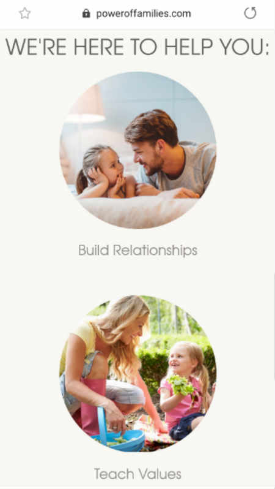
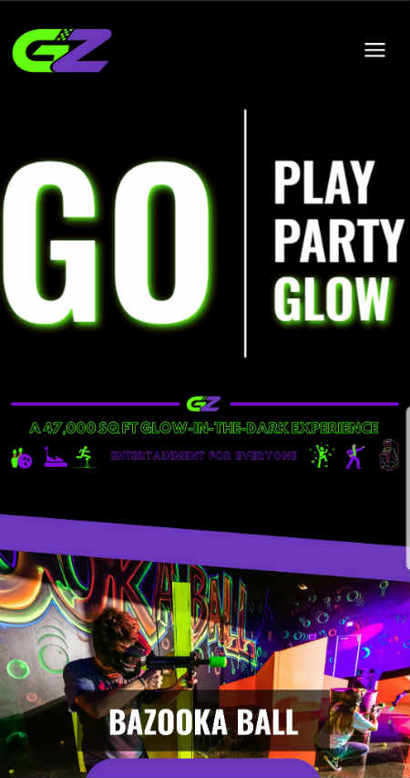
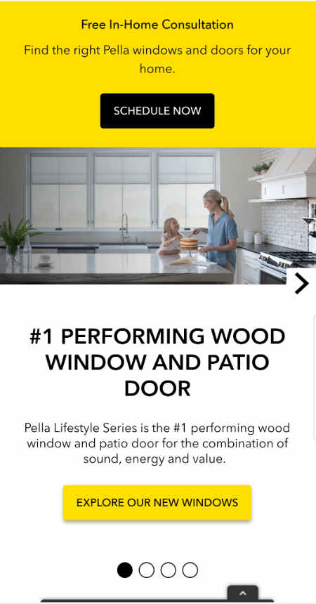

Fitt's Law
Power of Families
The website PowerOfFamilies.com is a good example of Fitt’s Law which says that the bigger the object and the closer it is the easier it is to use. The selection options are large circles that are centered on the screen making it very easy to understand the options and the navigation. Additionally it is surrounded by white space making the focus completely centered on the large options.
P.A.R.C - Contrast
Glow Zone
The Glow Zone website is vibrant with extreme contract. The stark white against the black pops out to grab your attention. Additionally the neon green and purple offer contrast that speaks to the product being offered. The colors work well to show a sense of excitement and fun. Although the font used in some places is difficult to read, the overall use of contract works well to sell the idea of glowing fun.
Hick's Law
Pella Windows and Doors
The Pella Windows and Doors website utilized well Hick’s Law which states that every additional choice increases the required time to make a decision. Pella has eliminated any distraction of multiple decisions and placed the button to request an in home estimate the main option on the page. Your attention is completely focused on that one button using its location and colors. Eliminating other options drive the user to want to click the button.